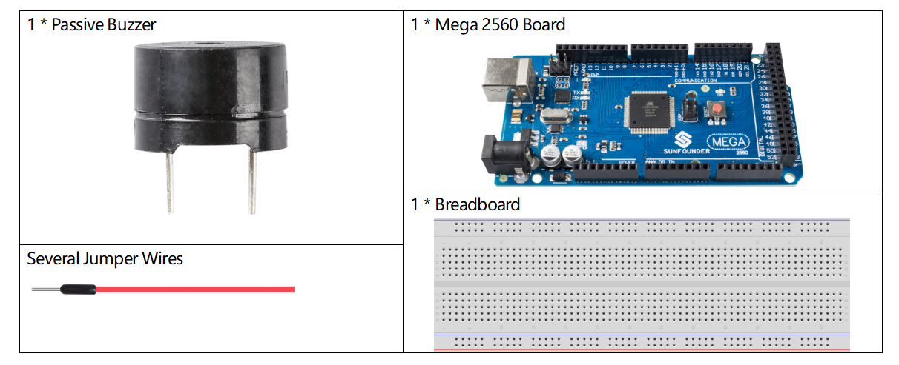

2.11 Passive Buzzer¶
Overview¶
In this lesson, you will get to know about passive buzzer. As a type of electronic buzzer with an integrated structure, passive buzzer is supplied by DC power, widely used in computer, alarm, electronic toy, telephone, timer and other electronic products or voice devices.
Components Required¶
Component Introduction¶
Buzzers can be categorized as active and passive ones (see the following picture). Turn the buzzer so that its pins are facing up, and the buzzer with a green circuit board is a passive buzzer, while the one enclosed with a black tape is an active one.
The difference between an active buzzer and a passive buzzer:


Fritzing Circuit¶

In this example, what we use to drive the buzzer is the pin 9. We get the cathode of the Buzzer to GND, and the anode to the digital pin 9.
Schematic Diagram¶

Code¶
At the time when you finish uploading the codes to the Mega2560 board, you can hear a melody containing seven notes.
Code Analysis¶
There are two points needing your attention:
①tone() & noTone(): This function is used to control the sound of the passive buzzer directly and its prototype is as follows:
void tone(int pin, unsigned int frequency)
void tone(int pin, unsigned int frequency, unsigned long duration)
Generates a square wave of the specified frequency (and 50% duty cycle) on a pin (so as to make the passive buzzer vibrate to make sound). A duration can be specified, otherwise the wave continues until a call to noTone(). The pin can be connected to a piezo buzzer or other speaker to play tones.
Only one tone can be generated at a time. If a tone is already playing on a different pin, the call to tone() will have no effect. If the tone is playing on the same pin, the call will set its frequency.
Use of the tone() function will interfere with PWM output on pins 3 and 11 (on boards other than the Mega).
It is not possible to generate tones lower than 31Hz.
pin: The Arduino pin on which to generate the tone.
frequency: The frequency of the tone in hertz.
duration: The duration of the tone in milliseconds (optional)
void noTone(int pin)
Stops the generation of a square wave triggered by tone(). Has no effect if no tone is being generated.
pin: The Arduino pin on which to generate the tone.
Having known the two functions, you may grasp the codes—the installation of the array melody[] and the array noteDurations[] is the preparation of the subsequently several times of calling of the function tone() and the changing of tone and duration in the loop for better effect of music play.
②pitches.h: The code uses an extra file, pitches.h. This file contains all the pitch values for typical notes. For example, NOTE_C4 is middle C. NOTE_FS4 is F sharp, and so forth. This note table was originally written by Brett Hagman, on whose work the tone() command was based. You may find it useful whenever you want to make musical notes.
#include "pitches.h"
Note
There is already a pitches.h file in this sample program. If we put it together with the main code in one folder, the successive steps of installing pitches.h can be omitted.

After you open the code 2.11passiveBuzzer, if you cannot open the pitches.h code, you can just install one manually. The steps are as follows:
To make the pitches.h file, either click on the button just below the serial monitor icon and choose “New Tab”, or use Ctrl+Shift+N.

Then paste in the following code and save it as pitches.h:
/*****************
Public Constants
*****************/
#define NOTE_B0 31
#define NOTE_C1 33
#define NOTE_CS1 35
#define NOTE_D1 37
#define NOTE_DS1 39
#define NOTE_E1 41
#define NOTE_F1 44
#define NOTE_FS1 46
#define NOTE_G1 49
#define NOTE_GS1 52
#define NOTE_A1 55
#define NOTE_AS1 58
#define NOTE_B1 62
#define NOTE_C2 65
#define NOTE_CS2 69
#define NOTE_D2 73
#define NOTE_DS2 78
#define NOTE_E2 82
#define NOTE_F2 87
#define NOTE_FS2 93
#define NOTE_G2 98
#define NOTE_GS2 104
#define NOTE_A2 110
#define NOTE_AS2 117
#define NOTE_B2 123
#define NOTE_C3 131
#define NOTE_CS3 139
#define NOTE_D3 147
#define NOTE_DS3 156
#define NOTE_E3 165
#define NOTE_F3 175
#define NOTE_FS3 185
#define NOTE_G3 196
#define NOTE_GS3 208
#define NOTE_A3 220
#define NOTE_AS3 233
#define NOTE_B3 247
#define NOTE_C4 262
#define NOTE_CS4 277
#define NOTE_D4 294
#define NOTE_DS4 311
#define NOTE_E4 330
#define NOTE_F4 349
#define NOTE_FS4 370
#define NOTE_G4 392
#define NOTE_GS4 415
#define NOTE_A4 440
#define NOTE_AS4 466
#define NOTE_B4 494
#define NOTE_C5 523
#define NOTE_CS5 554
#define NOTE_D5 587
#define NOTE_DS5 622
#define NOTE_E5 659
#define NOTE_F5 698
#define NOTE_FS5 740
#define NOTE_G5 784
#define NOTE_GS5 831
#define NOTE_A5 880
#define NOTE_AS5 932
#define NOTE_B5 988
#define NOTE_C6 1047
#define NOTE_CS6 1109
#define NOTE_D6 1175
#define NOTE_DS6 1245
#define NOTE_E6 1319
#define NOTE_F6 1397
#define NOTE_FS6 1480
#define NOTE_G6 1568
#define NOTE_GS6 1661
#define NOTE_A6 1760
#define NOTE_AS6 1865
#define NOTE_B6 1976
#define NOTE_C7 2093
#define NOTE_CS7 2217
#define NOTE_D7 2349
#define NOTE_DS7 2489
#define NOTE_E7 2637
#define NOTE_F7 2794
#define NOTE_FS7 2960
#define NOTE_G7 3136
#define NOTE_GS7 3322
#define NOTE_A7 3520
#define NOTE_AS7 3729
#define NOTE_B7 3951
#define NOTE_C8 4186
#define NOTE_CS8 4435
#define NOTE_D8 4699
#define NOTE_DS8 49
Phenomenon Picture¶